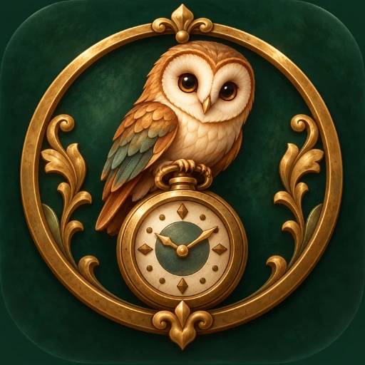

Merge Shop · Cozy Merge Adventure
Reopen a forgotten shop. Restore its treasures. Uncover the mystery it left behind. Forgotten & Found is a cozy merge game where every tap tells a story. Inherit a dusty antique shop that's been closed for sixty years, merge tools and materials to fix up treasures brought in by charming customers, and slowly piece together what really happened to the shop's mysterious founder.
Merge / Simulation
Android
Wobbly Studio
Combine matching tools and materials across 8 unique chains to discover new items. Every merge brings you closer to the treasures your customers need.
Watch a pocket watch, a music box, a wedding dress and more transform from broken to beautiful, stage by stage. Each restoration tells part of a larger story.
Bring 8 rooms back to life, room by room, as your reputation grows. Transform the dusty antique shop into a thriving treasure haven.
7 chapters, 12 hidden clues, and a founder who vanished without a trace. Piece together what really happened to Theodora Vale and the night she disappeared.
12 warm, memorable characters, each with their own treasure and their own story. Every interaction deepens the mystery.
Limited-time boards, exclusive rewards, and a whole new merge chain to chase. No timers pushing you, no fail states — just a cozy shop waiting to be reopened, one treasure at a time.